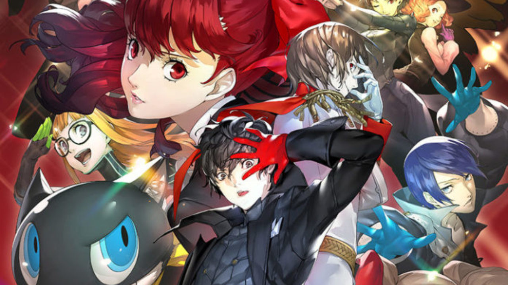

Cyberpunk 2077
Lanzamiento de Cyberpunk 2077
El 10 de diciembre de 2020, Cyberpunk 2077 llegó al mercado con gran expectativa. Desarrollado por CD Projekt
Red, el juego presenta un vasto mundo abierto en la futurista Night City...
Leer mas

Hitman III
Hitman 3, lanzado el 20 de enero de 2021, cierra la trilogía del Agente 47 con una mezcla de intriga y acción
en misiones globales. Desarrollado por IO Interactive
Leer mas

Persona 5 Royal
Persona 5 Royal llegó a PC el 21 de octubre de 2022, llevando la aclamada versión expandida del JRPG a una nueva
audiencia. Con gráficos mejorados y contenido adicional, esta edición ofrece una experiencia más rica y pulida
Leer mas
Final Fantasy VII Remake
inal Fantasy VII Remake no solo revitaliza un querido clásico, sino que también establece un nuevo estándar para
los remakes en la industria de los videojuegos.
Leer mas
DOOM Eternal
Doom Eternal ofrece una experiencia implacable y visceral que desafía a los jugadores a enfrentarse al infierno
de una manera nunca antes vista.
Leer mas
Sekiro Shadows Die Twice
Un shinobi en busca de venganza, enfrentándose a desafíos intensos con un sistema de combate preciso y una
narrativa inmersiva.
Leer mas
¡Novedades!
ChatGPT
E3 2020: Cancelación y Alternativas
El E3 2020, uno de los eventos más importantes del mundo de los videojuegos, fue cancelado debido a la pandemia de
COVID-19. Anunciada en marzo de 2020, esta fue la primera vez en la historia del evento que no se celebró en su
formato tradicional.
Aunque el E3 no pudo realizarse, la industria de los videojuegos se adaptó rápidamente. En lugar de las
presentaciones en vivo, los jugadores pudieron disfrutar de alternativas digitales:
Summer Game Fest: Organizado por Geoff Keighley, ofreció una serie de eventos y anuncios en línea durante el
verano.
Presentaciones digitales: Compañías como Ubisoft, Sony, Microsoft y Nintendo realizaron sus propios eventos en
línea para mostrar nuevos juegos y actualizaciones.
Aunque el formato cambió, la emoción y las novedades continuaron fluyendo. En Gaming Zone, seguiremos ofreciéndote
las últimas noticias y actualizaciones del mundo de los videojuegos. ¡Mantente conectado para no perderte nada!